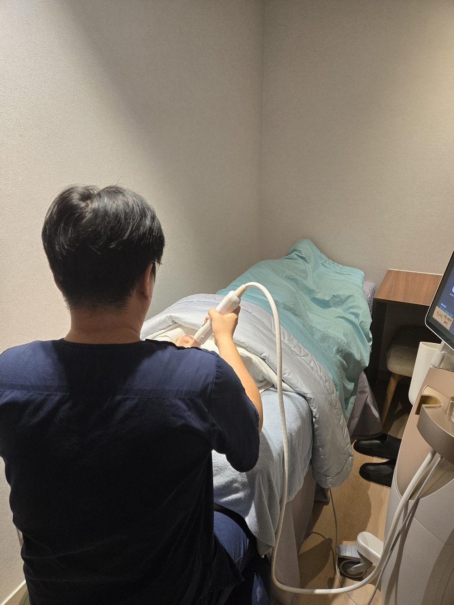
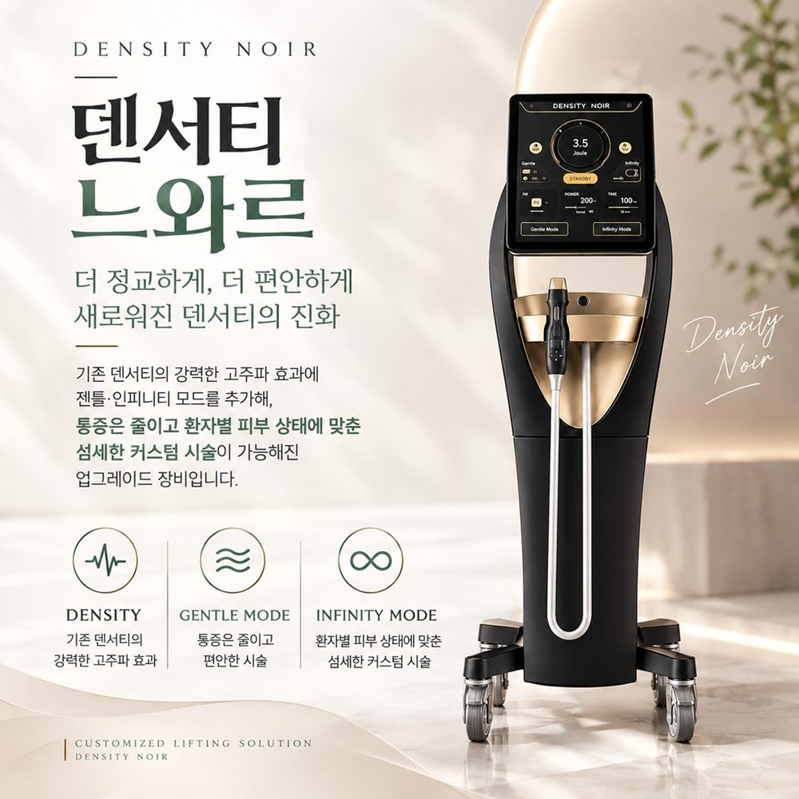
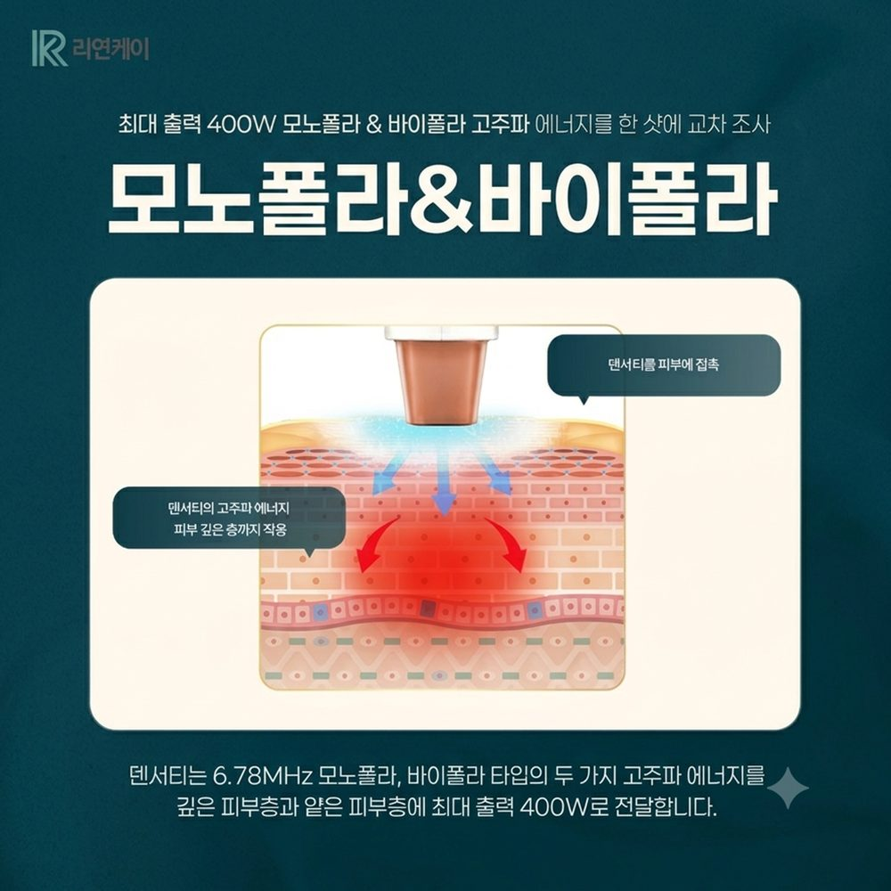
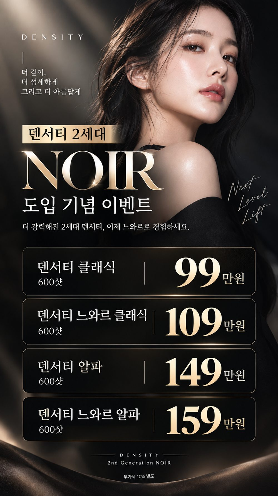
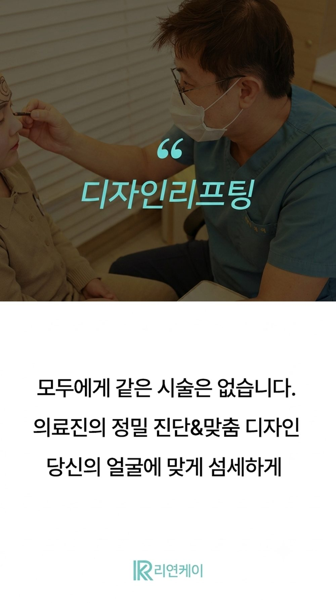

30대 중반이 되면 어느 날 문득, 거울 속 얼굴선이 예전 같지 않다는 걸 느끼게 됩니다.
살이 찐 것도 아닌데 턱선이 흐릿해지고, 사진을 찍으면 볼이 아래로 내려앉아 보이기도 하죠.
그렇다고 당장 강한 시술은 부담스럽고, 관리숍이나 화장품만으로는 한계가 느껴지는 분들이 많습니다. 이럴 때 가장 많이 문의하시는 고주파 리프팅이 덴서티입니다. 이 글에서는 10월에 새로 도입된 2세대 덴서티 느와르를 30대 중반 기준으로, 가격과 기대할 수 있는 효과 중심으로 정리했습니다.

피부 탄력은 표면이 아니라 진피층의 콜라겐과 엘라스틴이 만들어 냅니다. 이 성분들은 나이가 들면서 서서히 줄어들고, 30대 중반부터 그 변화를 체감하는 분들이 늘어납니다.
30대 중반에 자주 듣는 고민은 이런 것들입니다.
이 시기에는 이미 처진 것을 끌어올리는 것보다, 탄력이 더 떨어지기 전에 관리를 시작하는 것이 부담이 적은 접근입니다. 진피층까지 에너지를 전달하는 고주파 리프팅이 이때 많이 고려됩니다.
덴서티는 제이시스메디칼의 고주파 장비로, 단극(모노폴라)과 양극(바이폴라) 고주파를 순차적으로 조사하는 방식을 씁니다. 5단계 쿨링으로 표피를 보호하고, 피부 임피던스를 측정해 출력을 자동으로 보정하는 기능이 들어 있습니다.
덴서티 느와르는 기존 덴서티 하이의 후속 모델입니다. 제이시스메디칼은 2026년 9월 4일 식약처 허가를 받았다고 밝혔습니다.

덴서티의 쿨링(DCD) 시스템 성능이 향상되었습니다.
팁을 누르는 깊이에 따라 RF 출력 조건을 선택하는 모드입니다.
설정한 시술 레벨의 RF 에너지를 끊김 없이 출력하는 모드입니다.
양극 고주파만 전달하도록 설계된, 덴서티 라인업 최초의 팁입니다.
리연케이의원에서는 이 모드들을 활용해 통증 부담을 줄이고 피부 상태에 맞춘 섬세한 시술을 하는 데 중점을 두고 있습니다.
고주파 에너지로 진피층에 열을 전달하는 시술이라, 아래와 같은 변화를 기대하고 많이 찾으십니다.
피부가 단단해지고 얼굴이 가벼워 보이는 느낌
턱선과 볼 라인이 정돈되어 보이는 느낌
눈가·이마 등 얇은 주름이 완화되는 느낌
모공과 결이 매끈해지는 느낌
효과는 시술 직후보다 시간이 지나면서 서서히 느끼는 경우가 많고, 피부 상태와 나이, 시술 부위에 따라 개인차가 있습니다.

| 구분 | 단극성 (모노폴라) | 양극성 (바이폴라) |
|---|---|---|
| 전류 흐름 | 팁 → 몸 통과 → 등의 접지판 | 팁 안의 두 전극 사이 |
| 닿는 깊이 | 진피 깊은 층까지 | 상대적으로 얕은 진피 |
| 열의 성격 | 깊고 강하게 | 얕고 고르게 |
| 잘 맞는 고민 | 처짐, 깊은 탄력 저하 | 결, 잔주름, 겉 탄력 |
| 덴서티 팁 | 클래식 | 부스트 (알파팁은 두 방식 모두 사용) |
덴서티는 이 두 방식을 한 장비에서 조합할 수 있어, 깊은 층과 얕은 층을 같은 시술에서 함께 다룰 수 있습니다.
단극 고주파만 사용합니다. 진피 깊은 층의 탄력을 중심으로 관리하고 싶을 때 고려합니다.
단극과 양극을 함께 사용합니다. 탄력과 함께 잔주름, 피부결까지 한 번에 신경 쓰고 싶을 때 고려합니다.
30대 중반은 "처짐보다 탄력 저하가 먼저 느껴지는" 시기라 클래식으로 시작해 보는 분도 많고, 주름까지 함께 고민이라면 알파팁을 선택하기도 합니다. 정답이 있는 것은 아니라서, 피부 두께와 지방량, 고민 부위를 직접 보고 정하는 상담이 가장 중요합니다.
리연케이의원의 10월 느와르 도입 기념 이벤트가는 클래식 109만원, 알파팁 159만원입니다(600샷 기준, 부가세 별도).

| 구분 | 샷 수 | 정상가 | 10월 이벤트가 |
|---|---|---|---|
| 덴서티 클래식 | 600샷 | 150만원대 | 99만원 |
| 덴서티 알파팁 | 600샷 | 220만원대 | 149만원 |
| 2세대 덴서티 느와르 클래식 | 600샷 | 상담 시 안내 | 109만원 |
| 2세대 덴서티 느와르 알파팁 | 600샷 | 상담 시 안내 | 159만원 |
가격은 샷 수와 팁 종류에 따라 달라지고, 얼굴 전체에 필요한 샷 수는 피부 상태와 부위에 따라 상담 후 정해집니다.
시술 후 붉어짐, 열감, 부기가 있을 수 있고 대부분 시간이 지나면 완화됩니다. 드물게 화상이나 물집 등이 생길 수 있어, 이상 반응이 있으면 바로 병원에 알려주세요.
동일한 시술이라도 피부 상태에 따라 만족도와 유지 기간이 다릅니다.
임신 중이거나 체내에 전자 장치(심박동기 등)가 있는 경우, 시술 부위에 염증이나 상처가 있는 경우는 시술이 어려울 수 있습니다.
자외선 차단과 보습을 신경 쓰고, 시술 직후 사우나·찜질이나 강한 자극은 피해 주세요.
같은 장비라도 어떻게 쓰느냐에 따라 경험이 달라집니다. 리연케이의원은 얼굴 전체를 한 번에 같은 방식으로 하지 않고, 개인의 얼굴 구조와 고민에 맞춰 디자인하는 리프팅을 지향합니다.

나이보다 피부 상태가 기준입니다. 탄력 저하를 느끼기 시작했다면 상담을 통해 현재 상태에 맞는지 확인해 보시는 것을 권합니다.
젠틀 모드와 인피니트 모드가 추가되고 쿨링 성능이 개선된 2세대 장비입니다.
고민 부위와 피부 상태에 따라 달라집니다. 진피 깊은 탄력 중심이면 클래식, 잔주름과 결까지 함께 신경 쓰시면 알파팁을 많이 고려합니다.
통증은 개인차가 있습니다. 샷마다 쿨링을 하고 있고, 상담에서 불편한 정도를 말씀해 주시면 에너지를 조절합니다.
피부 상태와 목표에 따라 달라지나 보통 1년 단위로 꾸준히 받으시면 좋습니다. 자세한 건 상담 후 정합니다.
탄력 관리, 지금 상담부터 시작해 보세요
탄력은 한 번 떨어지면 되돌리기 어려운 만큼, 미리 현재 상태를 점검해 보는 것이 도움이 됩니다. 느와르 도입 기념 이벤트는 10월 31일까지입니다. 직접 상담하시고 내 피부에 맞는 팁과 샷 수를 확인해 보세요.
※ 이 글은 일반적인 정보 제공을 목적으로 하며, 시술 효과와 유지 기간은 개인에 따라 다를 수 있습니다.